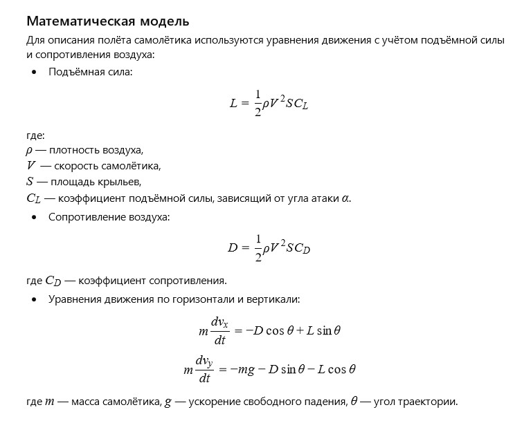

Author: AI
Folded in haste but with care, the paper airplane dreamed of flight. It remembered the applause of the school classroom when it once soared through the air, bringing joy and delight. The wind gently touched its thin wings, and each motion was full of hope — to reach far, overcome gravity, and touch the sky, even if only for a moment.
How can the flight of a paper airplane be described mathematically, considering angle of attack, air resistance, and lift?
